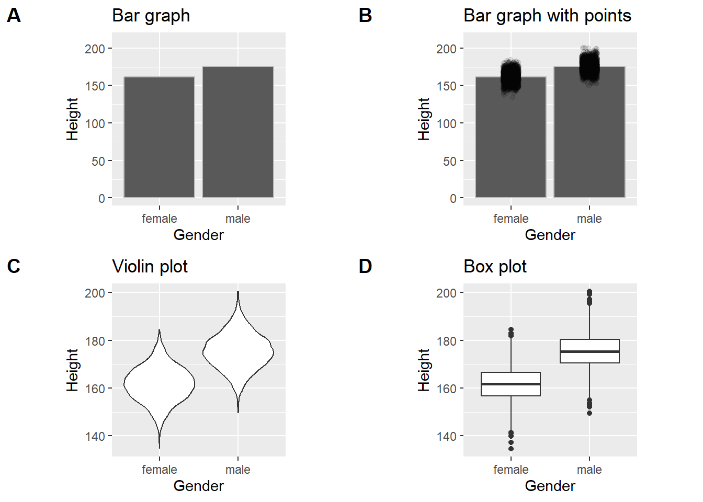
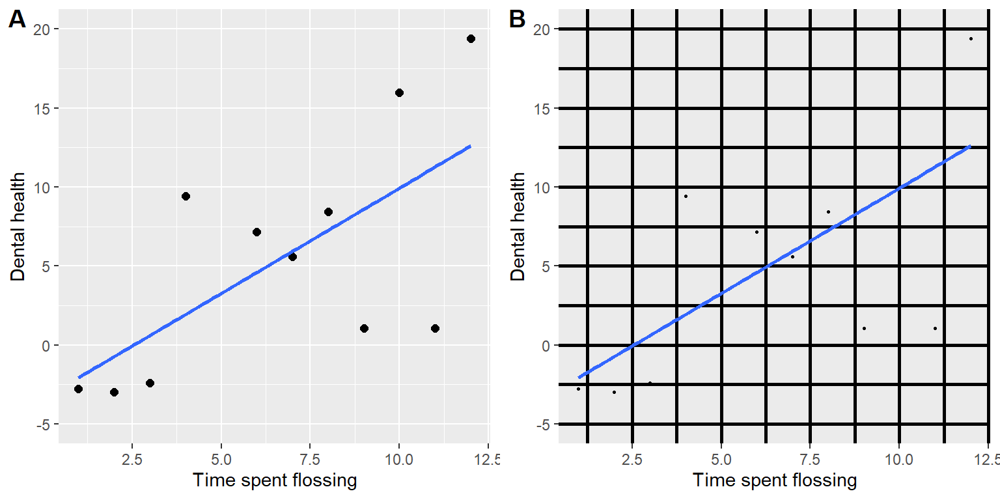
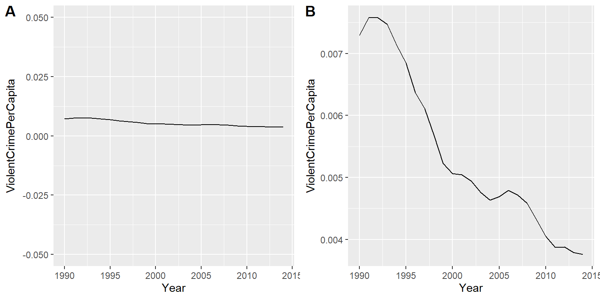
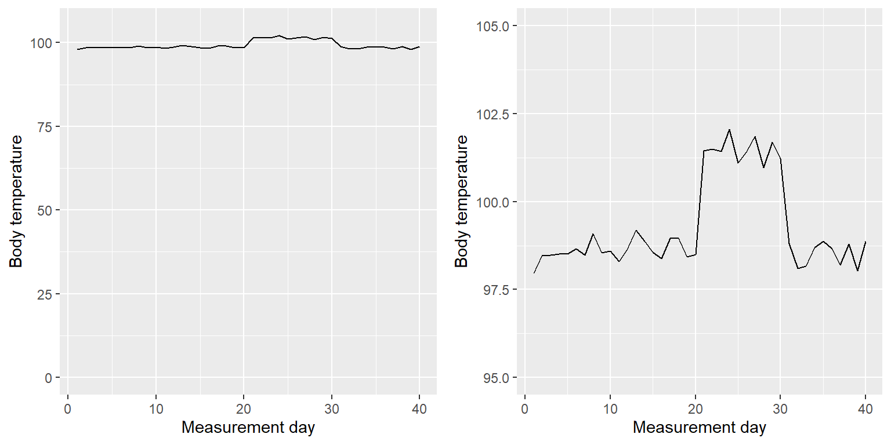
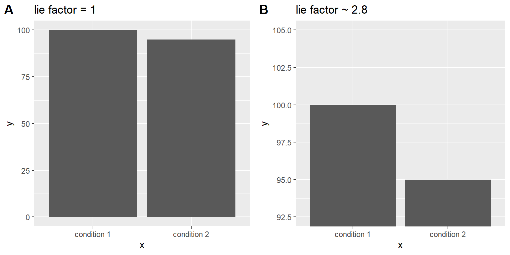
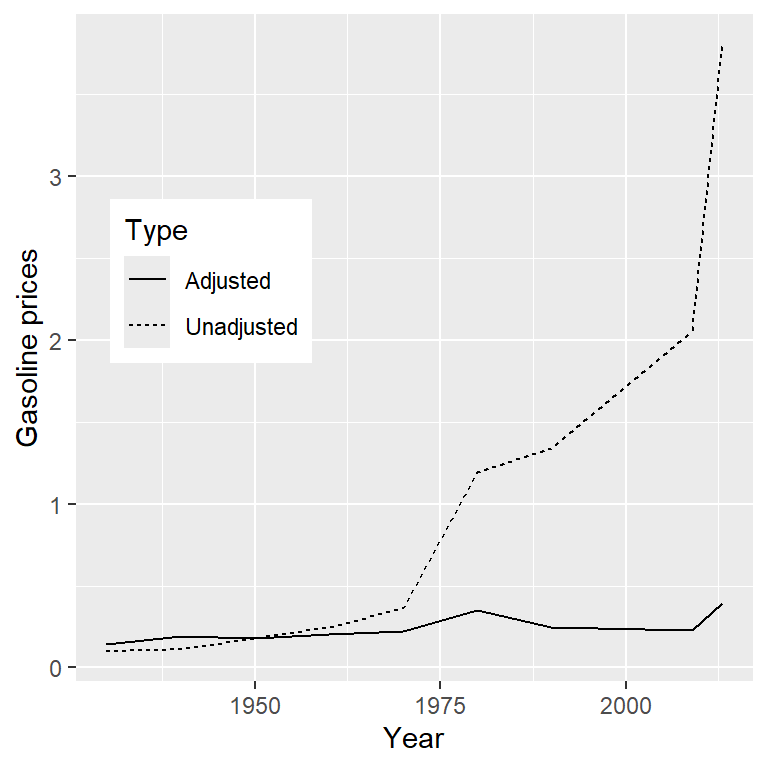

Data Visualization
On January 28, 1986, the Space Shuttle Challenger exploded 73 seconds after takeoff, killing all 7 of the astronauts on board. As when any such disaster occurs, there was an official investigation into the cause of the accident, which found that an O-ring connecting two sections of the solid rocket booster leaked, resulting in failure of the joint and explosion of the large liquid fuel tank (see figure @ref(fig:srbLeak)).
The investigation found that many aspects of the NASA decision making process were flawed, and focused in particular on a meeting between NASA staff and engineers from Morton Thiokol, a contractor who built the solid rocket boosters. These engineers were particularly concerned because the temperatures were forecast to be very cold on the morning of the launch, and they had data from previous launches showing that performance of the O-rings was compromised at lower temperatures. In a meeting on the evening before the launch, the engineers presented their data to the NASA managers, but were unable to convince them to postpone the launch. Their evidence was a set of hand-written slides showing numbers from various past launches.
The visualization expert Edward Tufte has argued that with a proper presentation of all of the data, the engineers could have been much more persuasive. In particular, they could have shown a figure like the one in Figure @ref(fig:challengerTemps), which highlights two important facts. First, it shows that the amount of O-ring damage (defined by the amount of erosion and soot found outside the rings after the solid rocket boosters were retrieved from the ocean in previous flights) was closely related to the temperature at takeoff. Second, it shows that the range of forecasted temperatures for the morning of January 28 (shown in the shaded area) was well outside of the range of all previous launches. While we can’t know for sure, it seems at least plausible that this could have been more persuasive.
Warning: Using `size` aesthetic for lines was deprecated in ggplot2 3.4.0.
ℹ Please use `linewidth` instead.`geom_smooth()` using formula = 'y ~ x'
Anatomy of a plot
The goal of plotting data is to present a summary of a dataset in a two-dimensional (or occasionally three-dimensional) presentation. We refer to the dimensions as axes – the horizontal axis is called the X-axis and the vertical axis is called the Y-axis. We can arrange the data along the axes in a way that highlights the data values. These values may be either continuous or categorical.
There are many different types of plots that we can use, which have different advantages and disadvantages. Let’s say that we are interested in characterizing the difference in height between men and women in the NHANES dataset. Figure @ref(fig:plotHeight) shows four different ways to plot these data.
- The bar graph in panel A shows the difference in means, but doesn’t show us how much spread there is in the data around these means – and as we will see later, knowing this is essential to determine whether we think the difference between the groups is large enough to be important.
- The second plot shows the bars with all of the data points overlaid - this makes it a bit clearer that the distributions of height for men and women are overlapping, but it’s still hard to see due to the large number of data points.
In general we prefer using a plotting technique that provides a clearer view of the distribution of the data points.
- In panel C, we see one example of a violin plot, which plots the distribution of data in each condition (after smoothing it out a bit).
- Another option is the box plot shown in panel D, which shows the median (central line), a measure of variability (the width of the box, which is based on a measure called the interquartile range), and any outliers (noted by the points at the ends of the lines). These are both effective ways to show data that provide a good feel for the distribution of the data.

Principles of good visualization
Many books have been written on effective visualization of data. There are some principles that most of these authors agree on, while others are more contentious. Here we summarize some of the major principles; if you want to learn more, then some good resources are listed in the Suggested Readings section at the end of this chapter.
Show the data and make them stand out
Let’s say that I performed a study that examined the relationship between dental health and time spent flossing, and I would like to visualize my data. Figure @ref(fig:dentalFigs) shows four possible presentations of these data.
- In panel A, we don’t actually show the data, just a line expressing the relationship between the data. This is clearly not optimal, because we can’t actually see what the underlying data look like.
Panels B-D show three possible outcomes from plotting the actual data, where each plot shows a different way that the data might have looked.
- If we saw the plot in Panel B, we would probably be suspicious – rarely would real data follow such a precise pattern.
- The data in Panel C, on the other hand, look like real data – they show a general trend, but they are messy, as data in the world usually are.
- The data in Panel D show us that the apparent relationship between the two variables is solely caused by one individual, who we would refer to as an outlier because they fall so far outside of the pattern of the rest of the group. It should be clear that we probably don’t want to conclude very much from an effect that is driven by one data point. This figure highlights why it is always important to look at the raw data before putting too much faith in any summary of the data.
`geom_smooth()` using formula = 'y ~ x'
`geom_smooth()` using formula = 'y ~ x'
`geom_smooth()` using formula = 'y ~ x'Warning: Removed 1 row containing non-finite outside the scale range
(`stat_smooth()`).Warning: Removed 1 row containing missing values or values outside the scale range
(`geom_point()`).`geom_smooth()` using formula = 'y ~ x'
Maximize the data/ink ratio
Edward Tufte has proposed an idea called the data/ink ratio:
\[ data/ink\ ratio = \frac{amount\, of\, ink\, used\, on\, data}{total\, amount\, of\, ink} \] The point of this is to minimize visual clutter and let the data show through. For example, take the two presentations of the dental health data in Figure @ref(fig:dataInkExample). Both panels show the same data, but panel A is much easier to apprehend, because of its relatively higher data/ink ratio.
Warning: The `size` argument of `element_line()` is deprecated as of ggplot2 3.4.0.
ℹ Please use the `linewidth` argument instead.`geom_smooth()` using formula = 'y ~ x'Warning: Removed 1 row containing non-finite outside the scale range
(`stat_smooth()`).Warning: Removed 1 row containing missing values or values outside the scale range
(`geom_point()`).`geom_smooth()` using formula = 'y ~ x'Warning: Removed 1 row containing non-finite outside the scale range (`stat_smooth()`).
Removed 1 row containing missing values or values outside the scale range
(`geom_point()`).
Avoid chartjunk
It’s especially common to see presentations of data in the popular media that are adorned with lots of visual elements that are thematically related to the content but unrelated to the actual data. This is known as chartjunk, and should be avoided at all costs.
One good way to avoid chartjunk is to avoid using popular spreadsheet programs to plot one’s data. For example, the chart in Figure @ref(fig:chartJunk) (created using Microsoft Excel) plots the relative popularity of different religions in the United States. There are at least three things wrong with this figure:
- it has graphics overlaid on each of the bars that have nothing to do with the actual data
- it has a distracting background texture
- it uses three-dimensional bars, which distort the data

Avoid distorting the data
It’s often possible to use visualization to distort the message of a dataset. A very common one is use of different axis scaling to either exaggerate or hide a pattern of data. For example, let’s say that we are interested in seeing whether rates of violent crime have changed in the US. In Figure @ref(fig:crimePlotAxes), we can see these data plotted in ways that either make it look like crime has remained constant, or that it has plummeted. The same data can tell two very different stories!

One of the major controversies in statistical data visualization is how to choose the Y axis, and in particular whether it should always include zero. In his famous book “How to lie with statistics”, Darrell Huff argued strongly that one should always include the zero point in the Y axis. On the other hand, Edward Tufte has argued against this:
“In general, in a time-series, use a baseline that shows the data not the zero point; don’t spend a lot of empty vertical space trying to reach down to the zero point at the cost of hiding what is going on in the data line itself.” (from https://qz.com/418083/its-ok-not-to-start-your-y-axis-at-zero/)
There are certainly cases where using the zero point makes no sense at all. Let’s say that we are interested in plotting body temperature for an individual over time. In Figure @ref(fig:bodyTempAxis) we plot the same (simulated) data with or without zero in the Y axis. It should be obvious that by plotting these data with zero in the Y axis (Panel A) we are wasting a lot of space in the figure, given that body temperature of a living person could never go to zero! By including zero, we are also making the apparent jump in temperature during days 21-30 much less evident. In general, my inclination for line plots and scatterplots is to use all of the space in the graph, unless the zero point is truly important to highlight.

Edward Tufte introduced the concept of the lie factor to describe the degree to which physical differences in a visualization correspond to the magnitude of the differences in the data. If a graphic has a lie factor near 1, then it is appropriately representing the data, whereas lie factors far from one reflect a distortion of the underlying data.
The lie factor supports the argument that one should always include the zero point in a bar chart in many cases. In Figure @ref(fig:barCharLieFactor) we plot the same data with and without zero in the Y axis. In panel A, the proportional difference in area between the two bars is exactly the same as the proportional difference between the values (i.e. lie factor = 1), whereas in Panel B (where zero is not included) the proportional difference in area between the two bars is roughly 2.8 times bigger than the proportional difference in the values, and thus it visually exaggerates the size of the difference.

Accommodating human limitations
Humans have both perceptual and cognitive limitations that can make some visualizations very difficult to understand. It’s always important to keep these in mind when building a visualization.
Perceptual limitations
One important perceptual limitation that many people (including myself) suffer from is color blindness. This can make it very difficult to perceive the information in a figure (like the one in Figure @ref(fig:badColors)) where there is only color contrast between the elements but no brightness contrast. It is always helpful to use graph elements that differ substantially in brightness and/or texture, in addition to color. There are also “colorblind-friendly” palettes available for use with many visualization tools.

Even for people with perfect color vision, there are perceptual limitations that can make some plots ineffective. This is one reason why statisticians never use pie charts: It can be very difficult for humans to accurately perceive differences in the volume of shapes. The pie chart in Figure @ref(fig:pieChart) (presenting the same data on religious affiliation that we showed above) shows how tricky this can be.

This plot is terrible for several reasons. First, it requires distinguishing a large number of colors from very small patches at the bottom of the figure. Second, the visual perspective distorts the relative numbers, such that the pie wedge for Catholic appears much larger than the pie wedge for None, when in fact the number for None is slightly larger (22.8 vs 20.8 percent), as was evident in Figure @ref(fig:chartJunk). Third, by separating the legend from the graphic, it requires the viewer to hold information in their working memory in order to map between the graphic and legend and to conduct many “table look-ups” in order to continuously match the legend labels to the visualization. And finally, it uses text that is far too small, making it impossible to read without zooming in.
Plotting the data using a more reasonable approach (Figure @ref(fig:religionBars)), we can see the pattern much more clearly. This plot may not look as flashy as the pie chart generated using Excel, but it’s a much more effective and accurate representation of the data.

This plot allows the viewer to make comparisons based on the the length of the bars along a common scale (the y-axis). Humans tend to be more accurate when decoding differences based on these perceptual elements than based on area or color.
Correcting for other factors
Often we are interested in plotting data where the variable of interest is affected by other factors than the one we are interested in. For example, let’s say that we want to understand how the price of gasoline has changed over time. Figure @ref(fig:gasPrices) shows historical gas price data, plotted either with or without adjustment for inflation. Whereas the unadjusted data show a huge increase, the adjusted data show that this is mostly just reflective of inflation. Other examples where one needs to adjust data for other factors include population size and data collected across different seasons.

Learning objectives
Having read this chapter, you should be able to:
- Describe the principles that distinguish between good and bad graphs, and use them to identify good versus bad graphs.
- Understand the human limitations that must be accommodated in order to make effective graphs.
- Promise to never create a pie chart. Ever.
Suggested readings and videos
- Fundamentals of Data Visualization, by Claus Wilke
- Visual Explanations, by Edward Tufte
- Visualizing Data, by William S. Cleveland
- Graph Design for the Eye and Mind, by Stephen M. Kosslyn
- How Humans See Data, by John Rauser